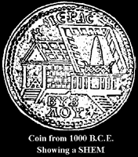
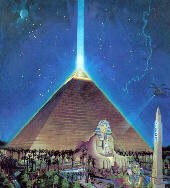
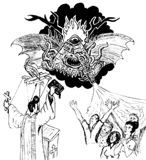
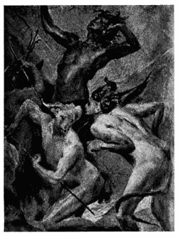

As we discussed in The Immaculate Deception, mankind has been genetically altered by an extraterrestrial race to serve as slaves. The original genetic engineers responsible for our mutation have long since departed, leaving in their wake another group of extraterrestrials which have been called "Watchers." They claim to be merely observing our species but the evidence reveals a much more sinister plan.
These watchers are merely the latest in a line of manipulating species which have interfered with the natural evolution of humanity. The original custodians of the human race, the Elohim, set the stage for mankind's history of manipulation.
After the flood, the Elohim became less concerned with mankind, believing that their genetically improved, human slaves would no longer threaten their position of authority. They allowed humans to train and work in their space ports. These human workers began to become familiar with the vehicles which the "Gods" used to travel to their divine abode in the sky. Ancient records described this vehicle as a "sky chamber;" an oval vehicle which flew across the sky. Our modern description of these oval shaped vehicles are "flying saucers" and "UFOs." In ancient days, man built stone monuments to simulate the fiery skyships that the "Gods" traveled in. These monuments were called names that meant things like "STONES THAT RISE" (Sumerian), "OBJECTS THAT GIVE OFF LIGHT" (Akkadians, Babylonians, Assyrians), "FIERY OBJECTS" (Amurru), and "FIRE BIRD OF STONE" (Hurrians, Hittites).
The Hebrew word for these oval-topped monuments to the alien skyships is "SHEM." Modern bibles mistranslate the word SHEM into the english word "name" completely changing the meaning of the Tower of Babel story. The human workers began to spread out across the land and realized that if they imitated their masters and built a skyship, they would be able to improve their station in life and become like the GODS.
The Bible begins the tale of the Tower of Babel by stating a very important fact:
Genesis 11 And the whole earth was of one language, and of one speech.
It is significant to note that up to this point in biblical history, man had not fought against his fellow man other than in conflicts between individuals. There had been no mention of wars, no racial strife, no religious bigotry, no patriotic blood baths. Man had no reason to gang up and attack other groups of men. At that time, man was not at war with his fellow man and all men communicated freely in one tongue. It was this free communication which God knew he must put an end to if he planned on keeping men enslaved.
Knowing that the word SHEM has been mistranslated, we can now read what was REALLY happening in the Bible:
Genesis 11:2 And it came to pass, as they journeyed from the east, that they found a plain in the land of Shinar; (Sumer) and they dwelt there. 11:3 And they said one to another, Go to, let us make brick, and burn them thoroughly. And they had brick for stone, and slime had they for morter. 11:4 and they said, Go to, let us build us a city and a tower, whose top may reach unto heaven; and let us make us a name, (SHEM or skyship) lest we be scattered abroad upon the face of the whole earth.
It is apparent that at this time, man was attempting to build a civilization for himself. He desired to have a city and a launch tower for a skyship so that he could be like the "Gods" he had worked for and looked up to. If the original translation of SHEM were kept as "name" we must ask how it is that this "name" would not keep them from being scattered abroad upon the face of the earth. Whatever the translation one thing is clear, these "Gods" were not pleased with man's desire to break free of his chains of enslavement and improve his lot in life.
Genesis 11:5 And the Lord came down to see the city and the tower, which the children of men builded.
Why does an "all-seeing" God need to come down to see ANYTHING? And where exactly is he coming down from?
Genesis 11:6 and the Lord said, Behold, the people is one, and they have all one language; and this they begin to do: and now nothing will be restrained from them, which they have imagined to do.
We now see a reference to mankind being "ONE." But this ONE is not the ONE of the collective will known as "GOD" and God won't have it. We must now ask, how it is that making a "name" would be so much of a threat to God that he would say "and now nothing will be restrained from them." The replacement of the word "name" with "skyborne vehicle makes the threat much more understandable. Another important point to note is that these "Gods" admit that if man works together, there is nothing we can't do. The Master/Slave relationship becomes very clear now and it becomes obvious that God does not want to lose his slaves by the action he takes next.
Genesis 11:7 Go to, let us go down, and there confound their language, that they may not understand one another's speech. 11:8 So the Lord scattered them abroad from thence upon the face of all the earth: and they left off to build the city.
The fact that there is more than one of the Elohim is again shown by the use of the word "us" in the first sentence above, just as it was used in Genesis 1:26 and 3:22. God now creates division among men to hamper their ability to work together.
How did these "Gods" confound man's language and cause him to no longer work together? How did they make man stop desiring to settle down and build a city and instead make man desire to scatter out? One possible explanation involves the use of mind control techniques to alter the thought patterns of the workers and planners of the tower. This could have been accomplished through the use of biological and neurological implants (biological and psychological warfare). But to make sure that man didn't come back and start working together again, it was necessary for a genetic overhaul of mankind. The Gods also created genetic differences in external appearance (races) and implanted in the minds of the leaders of each new "race" that the other races were evil and to be avoided. If you accept the biblical account, you will recall that these humans were all descended from Noah and were all from the same race. The differences in races had to have began after the Tower of Babel! Making use of the "fear of the unknown and the different" instinct that animals are born with, the Gods have kept man in an arena, contending with himself so much that he never grows enough to threaten the Gods again. The Bible tells us that God commanded his people not to mix their seed with other races (1 Kings 11:2). This commandment was given specifically to maintin the division which God had caused at the Tower of Babel. This was a deliberate act of war against the human race but it wasn't the first one which the Gods had committed.
Even if pretend that God is NOT an extraterrestrial race, his acts of war against humanity in the Garden of Eden reveal the same Master/Slave relationship. The Bible tells us that God created man ignorant and intended on him staying that way. Why was man placed in the Garden? To till the ground and tend the garden (Gen. 2:15) So strictly from the biblical account, we see that man was created to be God's gardener...and since he wasn't given the freedom to leave (or to even know that he could leave since God kept the knowledge of choice, or good and evil, from him) man was created to be God's slave. When Eve was told by the serpent that God had deceived them and that they could become more than slaves, she and Adam partook of the fruit of the knowledge of good and evil and immediately became sentient and knew that they were different from the animals. They realized that they were not dressed (this is because the GODS themselves were dressed. Why were the Gods dressed?). When they heard God walking in the garden (since when does a spirit make noise when walking in a garden?) they hid. The all-knowing God must call out to them: "Where are you?" And when he saw that they were covering themselves, he realized that they had become sentient; possessing the ability to discern values and to choose between alternative options. They had become AS GODS! Now God was in a delimma and he realized that if man became able to live forever, then he wouldn't be able to keep him enslaved for very long, so God kicked man out of the garden and cursed the ground, telling man that he will have to work by the sweat of his brow in order to survive. This was God's first declaration of war on mankind. God hoped to keep man busy living hand-to-mouth, just to stay fed and alive. In this way, man would not have the time he needed to become a threat to God's status quo. God could keep man as his slave for a very long time.
When we look at the world around us we see that life is a struggle of "eat or be eaten." If God created this world, it was his intention that one life form devour another. This is reflective of a truly barbaric God! God could have made life which received its energy from sunlight (like the plants do) and thus rid the world of the inhumanity of life devouring life. But since God himself is merely an alien life form which feeds off the energies of other life forms (See Interdimensional Reptilians), we couldn't expect for the nature of life to be anything but what it is...dog eat dog.
Mankind was able to slowly crawl out of the holes which had been dug for it because the original Masters, had been replaced by a less visible race of aliens. According to ancient Sumerian texts, the Masters had acquired the mineral resources which brought them to this planet and they left the mutated human species to return to their home planet.  In their absence, the earth has been the target of a parasitic race which we affectionately call JHVH-1. This race is comprised of a life form which feeds off the electromagnetic energies emitted by the human brain when it is experiencing intense emotions such as passion or fear. The "rapture" induced by the "Holy Spirit" in churches results in a feeding frenzy of these alien beings.
This race of beings is described in Don't Trust This Face. Through their reptilian allies, they have taken over the manipulation of the human race by infiltrating and subverting secret organizations which have existed since biblical times. The original organization which they infiltrated was known as the Brotherhood of the Snake and was formed by the rebel Elohim in an effort to aid mankind in his quest for independence. This organization has splintered into numerous off-shoot groups which have been known by names such as "the Egyptian Mystery School," "Knights Templar," "Order of Orange," "Illuminati," "Rosicrucians," and "Freemasonry." These organizations have helped to keep man at war with his fellow man, keeping an elite few in power while providing a seemingly endless supply of psychic energy to the aliens through the misery of human suffering.
The sixteenth century philosopher Niccolo Machiavelli described how a third party could manipulate two other parties and maintain control over them both. Through political and social techniques which Machiavelli described, rulers would breed conflict between classes and factions of their own nations. They would then manipulate the situation, giving aid to each faction (while building his support with each of them internally) without any of the other factions' knowledge, and prolonging the conflicts while personally benefitting from them. Often times, these rulers offered a solution to the problem that they themselves created, making themselves appear to be a caring, savior. By keeping the people divided through these techniques, these rulers kept the masses from becoming a threat to their positions of authority.
The techniques which Machiavelli describes can be summarized as follows:
"God" has shown himself to be a master of these same Machiavellian techniques of manipulation. From the days of the Tower of Babel, the Gods have pitted one group against another to increase their power and control. Compare the following biblical examples to the techniques of Machiavelli:
God continues his plan through today by the formation of protestant schisms which breed conflict between the various denominations of Christianity. We can see the familiar hand of the alien-space-GOD in the formation of such religious offshoots as Calvinism which took the idea of being God's favorites, to the extreme, and Mormonism which believes that God lives on a planet in another solar system. These various factions have added fuel to the religious fire, creating conflict where there should be none. As Thomas Jefferson once said, "...it does me no injury for my neighbor to say there are twenty gods or no God." It is only when those twenty gods command man to convert all men that the conflicts begin.
Modern evangelism is the product of today's "civilized" attempt to subdue man to the will of God. With the spread of human rights throughout the world, we can see man become more humane towards his fellow man. God's original technique of "convert or die" has been replaced by the door to door missionary. But God's Machiavellian techniques continue to be evident with the God-created conflict called "HELL."
Christian fundamentalists claim that God wants to be surrounded only by those who truly love him. They state that God doesn't want people in heaven that are not there of their own free will.  What they fail to mention is that the majority of people who go to church do so NOT out of love for God but because of a fear of Hell. This technique is know as extortion and was made popular by the Mafia protection schemes. The Mafia would make people pay "protection money" to protect them from being hurt by...THE MAFIA. God creates a Hell, and then has people swear allegiance to him to protect them from the threat that he himself created.
Hell is the gun that God holds to the heads of his followers like the robber who tells his victims, "Give me your money or your life." Then when the robber is confronted with his deed he claims that the victim gave his money "of his own free will." If a Christian tries to feed you this line of illogic, explain to him that God can never surround himself with those who freely love him as long as he is holding a gun to the head of humanity.
The current Masters realize that their key to keeping mankind enslaved is to keep man subdued and at war with himself. They have used their mystic contacts or "channellers" to predict a coming apocolypse which will be heralded by mankind attempting to do what happened at the Tower of Babel. They claim that mankind will band together and form a New World Order, under the command of THE BEAST or THE ANTICHRIST. Christians are taught to quake in fear at the words NEW WORLD ORDER because it represents what God has always been against: the banding together and progress of mankind. Realizing that the Brotherhood of the Snake has been corrupted, we must be extremely careful when considering any New World Order as offered from today's "think-tanks," but our greatest hope is in unity and not division. Christians who fear a New World Order should consider that the Bible predicts that Jesus will come back to earth and establish his own NEW WORLD ORDER. After reading the laws that God established in the Old Testament (See Bible Stories You Won't Hear in Sunday School), one can only imagine what will happen to human rights under the New World Order of JHVH-1!
If humanity hopes to survive, we must stop participating in GOD's Machiavellian agenda of self-destruction. Mankind must stand firm and place its own objective, rational self interest above the altruistic demands of any tyrannical ruler and that includes one who uses its advanced technology to pretend to be GOD. You have been shown the curtain. Ignore the little decrepit man who says, "Pay no attention to the man behind the curtain." Throw the curtain wide and yank that little salesman off his stool! Stop fighting your fellow man and turn your attentions to the true source of human misery: GOD! Join the resistance forces today!

Return to the Luciferian Liberation Front's Main Page.
E-Mail your questions and comments.